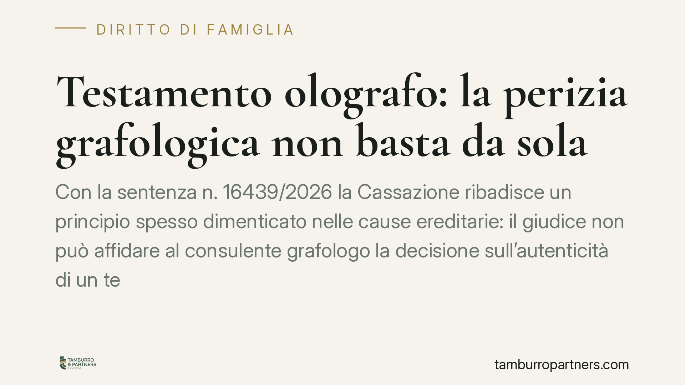

Testamento olografo: la perizia grafologica non basta da sola
Con la sentenza n. 16439/2026 la Cassazione ribadisce un principio spesso dimenticato nelle cause ereditarie: il giudice non può affidare al consulente grafologo la decisione sull'autenticità di un testamento olografo. La perizia è uno strumento, non un verdetto. Vediamo cosa cambia per chi contesta o difende un lascito scritto a mano.

Il caso e il principio affermato
Il testamento olografo è quello scritto, datato e firmato interamente a mano dal testatore (il *de cuius*, cioè chi ha disposto delle proprie volontà). Proprio perché privo di controlli notarili al momento della redazione, è terreno fertile per le contestazioni: eredi scontenti sostengono che la grafia non sia quella del defunto, o che la firma sia falsa.
In questi giudizi il giudice nomina spesso un consulente tecnico d'ufficio (CTU) grafologo, che analizza la scrittura. La domanda pratica è: la sua relazione decide la causa?
La Cassazione, con la sentenza n. 16439/2026, risponde di no. Il giudice non può delegare al perito la decisione sull'autenticità, né pretendere dalla perizia una certezza tecnico-scientifica assoluta. Deve invece valutare l'intero materiale probatorio raccolto e motivare in modo autonomo la propria conclusione.
Inquadramento normativo
La disciplina del testamento olografo si trova nell'art. 602 del codice civile, che ne fissa i requisiti di forma: autografia (scrittura di pugno), data e sottoscrizione.
Sul piano probatorio, il punto delicato riguarda chi deve provare cosa. Le Sezioni Unite (sent. n. 12307/2015) hanno stabilito che chi contesta l'autenticità del testamento olografo deve proporre domanda di accertamento negativo e ha l'onere di provarne la non autenticità. Non si applica, quindi, la querela di falso prevista per gli atti pubblici.
La consulenza grafologica rientra tra le prove soggette al libero apprezzamento del giudice (art. 116 c.p.c.). Non è una prova legale vincolante: il magistrato può discostarsene, purché spieghi perché. La pronuncia del 2026 si inserisce in questo solco, precisando che l'autenticità è un giudizio di diritto, non un responso tecnico.
Implicazioni pratiche
Per i chiamati all'eredità il messaggio è duplice.
Chi intende far valere un testamento olografo non deve considerare la perizia favorevole come un risultato automatico. Il giudice potrebbe ritenere la relazione insufficiente se isolata da altri elementi, o persino disattenderla motivatamente.
Chi contesta il testamento, al contrario, non può limitarsi a ottenere una perizia che esprima dubbi. Il grafologo quasi mai raggiunge la "certezza assoluta": la scrittura di una persona varia con l'età, la salute, le condizioni in cui scrive. Dubbi tecnici non equivalgono a prova di falsità.
La conseguenza è che vince la causa chi costruisce un quadro probatorio coerente e completo: testimonianze, documenti coevi, altre scritture di confronto, circostanze di redazione. La perizia è un tassello, non il mosaico.
Questo principio aumenta l'importanza dell'istruttoria complessiva e riduce il peso di una singola consulenza, con effetti anche sui tempi e sulle strategie processuali.
Cosa fare in concreto
- Raccogliete scritture di confronto autentiche e databili del defunto: lettere, documenti firmati, registri. Più sono vicine nel tempo al testamento, più sono utili al perito.
- Non puntate tutto sulla CTU: predisponete testimoni e documenti che ricostruiscano le circostanze in cui il testamento fu redatto (chi era presente, condizioni di salute del testatore).
- Se contestate il testamento, agite con domanda di accertamento negativo e preparatevi a sostenere l'onere della prova: dimostrare la non autenticità, non il semplice dubbio.
- Valutate una consulenza grafologica di parte prima di promuovere o resistere al giudizio, per misurare la solidità delle vostre tesi.
- Verificate la motivazione delle sentenze: se il giudice ha appiattito la decisione sulla sola perizia senza valutazione autonoma, consigliamo di considerare l'impugnazione per vizio di motivazione.
Consigliamo in ogni caso una valutazione preliminare della documentazione disponibile prima di avviare o difendersi in un contenzioso successorio: la qualità del materiale probatorio raccolto a monte incide più della singola perizia.
---
*Contributo informativo a cura di Tamburro & Partners - Avv. Giuseppe Tamburro. Non costituisce parere legale.*
Ogni famiglia ha il suo equilibrio.
Separazione, divorzio, affidamento, assegno: se vuoi un confronto riservato su una specifica situazione, scrivi allo studio. Ti rispondiamo entro un giorno lavorativo.